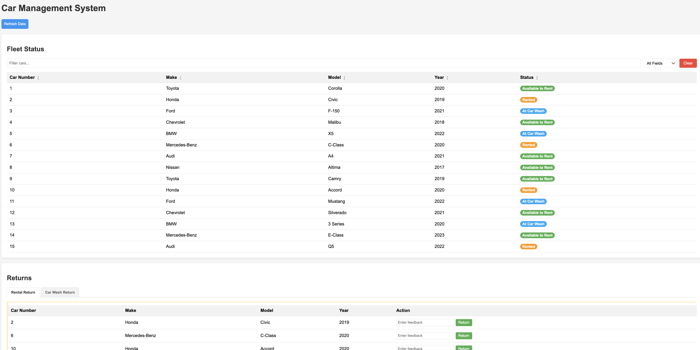
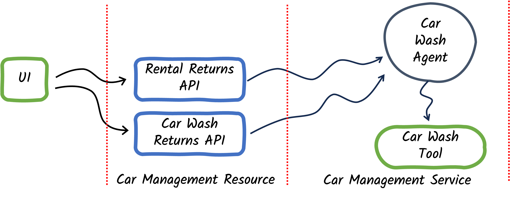

Step 01 - Implementing AI Agents
Welcome to Agentic Systems
Welcome to this workshop on agentic systems — autonomous AI agents that can work together to solve complex, multi-step problems. You’ll build agents that can make decisions, use tools, and collaborate in workflows.
What You’ll Learn
In this workshop, you will:
- Understand the difference between AI Services and AI Agents
- Build your first autonomous agent using the
quarkus-langchain4j-agenticmodule - Learn how agents use tools (function calling) to take actions
- See agents make decisions based on contextual information
A New Scenario: Car Management System
The Miles of Smiles car rental company needs help managing their fleet. Here’s the business process flow:
- Rental Returns: When customers return cars, the rental team records feedback about the car’s condition.
- Cleaning Requests: Based on the feedback, the system should automatically decide if the car needs cleaning.
- Cleaning Returns: After cleaning, the team provides their own feedback and returns the car.
- Fleet Availability: Clean cars with no issues return to the available pool for rental.
Your job is to build an AI agent that can analyze feedback and intelligently decide whether to request a cleaning.
AI Services vs. AI Agents
Before diving in, let’s clarify some key differences:
| Feature | AI Services | AI Agents |
|---|---|---|
| Purpose | Answer user questions | Perform autonomous tasks |
| Interaction | Reactive (responds to prompts) | Reactive and Proactive (takes actions) |
| Tool Usage | Can call tools when needed | Can call tools to accomplish goals |
| Workflows | Single-agent interactions | Multi-agent collaboration (workflow or supervisor-based) |
| Annotation | Methods use @SystemMessage and @UserMessage |
One method per interface (using @Agent) |
| Use Cases | Chatbots, Q&A, content generation | Automation, decision-making, orchestration |
In this workshop, you’ll learn how to build sophisticated, intelligent, and autonomous systems using AI agents.
Prerequisites
Before starting, ensure you have met the workshop setup requirements.
Running the Application
Navigate to the step-01 directory and start the application:
Once started, open your browser to http://localhost:8080.
Understanding the UI
The application has two main sections:
- Fleet Status (top): Shows all cars in the Miles of Smiles fleet with their current status.
- Returns (bottom): Displays cars that are currently rented or being cleaned.

Try It Out
Let’s see the agent in action!
Test 1: Car Needs Cleaning
Act as a rental team member processing a car return. In the Returns > Rental Return section, select a car and enter this feedback:
Click the Return button.
What happens?
- The agent analyzes the feedback
- Recognizes the car needs cleaning
- Calls the
CleaningToolto request interior cleaning - Updates the car’s status to
AT_CLEANING
Check your terminal logs (you may need to scroll up). You should see output like:
🚗 CleaningTool result: Cleaning requested for Mercedes-Benz C-Class (2020), Car #6:
- Interior cleaning
Additional notes: Interior cleaning required due to dog hair in back seat.
Test 2: Car Is Clean
Now try returning a car that’s already clean:
What happens?
- The agent analyzes the feedback
- Determines no cleaning is needed
- Returns
CLEANING_NOT_REQUIRED(no tool call made) - Updates the car’s status to
AVAILABLE
In your logs, you’ll see the agent’s response contains:
Notice how the agent made a decision without calling the cleaning tool. This demonstrates reasoning!
Building Agents with Quarkus LangChain4j
The langchain4j-agentic module introduces the ability to create AI Agents.
This module is available in Quarkus using the quarkus-langchain4j-agentic module.
If you open the pom.xml file from the project, you will see this dependency:
<dependency>
<groupId>io.quarkiverse.langchain4j</groupId>
<artifactId>quarkus-langchain4j-agentic</artifactId>
</dependency>
Key Concepts
Agents in LangChain4j:
- Declared as interfaces (implementation generated automatically)
- Use
@SystemMessageto define the agent’s role and behavior - Use
@UserMessageto provide request-specific context - Can be assigned tools to perform actions
- Support both programmatic and declarative (annotation-based) definitions, though in Quarkus, we recommend the declarative approach
- Only one method per interface can be annotated with
@Agent- this is the agent entry point - Designed to be composed with workflows or be invoked by a supervisor — agents can be composed together (more on this in Step 02)
- Focus on autonomous actions rather than conversational responses
Understanding the Application Architecture

The application consists of four main components:
- CarManagementResource: REST API endpoints
- CarManagementService: Business logic and agent orchestration
- CleaningAgent: AI agent that decides if cleaning is needed
- CleaningTool: Tool that requests cleaning services
Let’s explore each component.
Component 1: REST API Endpoints
The CarManagementResource provides REST APIs to handle car returns:
/**
* REST resource for car management operations.
*/
@Path("/car-management")
public class CarManagementResource {
@Inject
CarManagementService carManagementService;
/**
* Process a car return from rental.
*
* @param carNumber The car number
* @param rentalFeedback Optional rental feedback
* @return Result of the processing
*/
@POST
@Path("/rental-return/{carNumber}")
public Response processRentalReturn(Integer carNumber, @RestQuery String rentalFeedback) {
try {
String result = carManagementService.processCarReturn(carNumber, rentalFeedback, "");
return Response.ok(result).build();
} catch (Exception e) {
e.printStackTrace();
return Response.status(Response.Status.INTERNAL_SERVER_ERROR)
.entity("Error processing rental return: " + e.getMessage())
.build();
}
}
/**
* Process a car return from cleaning.
*
* @param carNumber The car number
* @param cleaningFeedback Optional cleaning feedback
* @return Result of the processing
*/
@POST
@Path("/cleaningReturn/{carNumber}")
public Response processCleaningReturn(Integer carNumber, @RestQuery String cleaningFeedback) {
try {
String result = carManagementService.processCarReturn(carNumber, "", cleaningFeedback);
return Response.ok(result).build();
} catch (Exception e) {
Log.error(e.getMessage(), e);
return Response.status(Response.Status.INTERNAL_SERVER_ERROR)
.entity("Error processing cleaning return: " + e.getMessage())
.build();
}
}
}
Key Points:
- The
processRentalReturnmethod (endpoint/car-management/rental-return/{carNumber}): Accepts feedback from the rental team - The
processCleaningReturnmethod (endpoint/car-management/cleaningReturn/{carNumber}): Accepts feedback from the cleaning team - Both endpoints delegate to
CarManagementService.processCarReturn
Component 2: Business Logic & Agent Invocation
The CarManagementService orchestrates the car return process:
@Inject
CleaningAgent cleaningAgent;
/**
* Process a car return from any operation.
*
* @param carNumber The car number
* @param rentalFeedback Optional rental feedback
* @param cleaningFeedback Optional cleaning feedback
* @return Result of the processing
*/
public String processCarReturn(Integer carNumber, String rentalFeedback, String cleaningFeedback) {
CarInfo carInfo = repository.findById(carNumber.longValue());
if (carInfo == null) {
return "Car not found with number: " + carNumber;
}
// Process the car result
String result = cleaningAgent.processCleaning(
carInfo.make,
carInfo.model,
carInfo.year,
carNumber,
rentalFeedback != null ? rentalFeedback : "",
cleaningFeedback != null ? cleaningFeedback : "");
if (result.toUpperCase().contains("CLEANING_NOT_REQUIRED")) {
carInfo.status = CarStatus.AVAILABLE;
repository.persist(carInfo);
}
return result;
}
Key Points:
- The
CleaningAgentfield is injected as a CDI bean - In the
processCarReturnmethod, the agent is invoked with car details and feedback. The response is checked forCLEANING_NOT_REQUIRED:- If found → Car marked as
AVAILABLE - If not found → Car stays
AT_CLEANING(tool was called)
- If found → Car marked as
This simple pattern allows you to integrate autonomous decision-making into your business logic!
Component 3: The CleaningAgent
Here’s where the magic happens — the AI agent definition:
/**
* Agent that determines what cleaning services to request.
*/
public interface CleaningAgent {
@SystemMessage("""
You handle intake for the cleaning department of a car rental company.
If cleaning is needed, you MUST call the provided requestCleaning function to take action based on the provided feedback.
Be specific about what services are needed.
If no cleaning is needed based on the feedback, respond with "CLEANING_NOT_REQUIRED".
""")
@UserMessage("""
Car Information:
Make: {carMake}
Model: {carModel}
Year: {carYear}
Car Number: {carNumber}
Feedback:
Rental Feedback: {rentalFeedback}
Cleaning Feedback: {cleaningFeedback}
""")
@Agent("Cleaning specialist. Determines what cleaning services are needed.")
@ToolBox(CleaningTool.class)
String processCleaning(
String carMake,
String carModel,
Integer carYear,
Integer carNumber,
String rentalFeedback,
String cleaningFeedback);
}
Let’s break it down:
@SystemMessage
Defines the agent’s role and decision-making logic:
- Acts as the intake specialist for the cleaning department
- Should call the
requestCleaningfunction in theCleaningToolwhen cleaning is needed - Should be specific about which services to request
- Should return
CLEANING_NOT_REQUIREDif no cleaning is needed
Pro Tip: Clear Instructions Matter
The system message is critical! It tells the agent:
- WHO it is (cleaning intake specialist)
- WHAT to do (submit cleaning requests)
- WHEN to act (based on feedback)
- HOW to respond (specific services or
CLEANING_NOT_REQUIRED)
@UserMessage
Provides context for each request using template variables:
- Car details:
{carMake},{carModel},{carYear},{carNumber} - Feedback sources:
{rentalFeedback},{cleaningFeedback}
These variables are automatically populated from the method parameters.
@Agent
Marks this as an agent method — only one per interface.
- Provides a description: “Cleaning specialist. Determines what cleaning services are needed.”
- This description can be used by other agents or systems to understand this agent’s purpose
@ToolBox
Assigns the CleaningTool to this agent:
- The agent can call methods in this tool to perform actions
- The LLM decides when and how to use the tool based on the task
Method Signature
Defines the inputs and output:
- Inputs: All the context the agent needs to make decisions
- Output:
String— the agent’s response (either tool result orCLEANING_NOT_REQUIRED)
No Implementation Required
Notice there’s no method body! LangChain4j automatically generates the implementation:
- Receives the inputs
- Sends the system + user messages to the LLM
- If the LLM wants to call the tool, it does so
- Returns the final response
Component 4: The CleaningTool
Tools enable agents to call functions that can take action. These tools can be local, like in the following CleaningTool example, or remote (using protocols like MCP - Model Context Protocol).
The concept is similar to function calling in AI services: the LLM decides when to invoke a tool based on the task at hand, and the tool performs the actual action.
/**
* Tool for requesting cleaning operations.
*/
@ApplicationScoped
public class CleaningTool {
@Inject
CarInfoRepository repository;
/**
* Requests a cleaning based on the provided parameters.
*
* @param carNumber The car number
* @param carMake The car make
* @param carModel The car model
* @param carYear The car year
* @param exteriorWash Whether to request exterior wash
* @param interiorCleaning Whether to request interior cleaning
* @param detailing Whether to request detailing
* @param waxing Whether to request waxing
* @param requestText The cleaning request text
* @return A summary of the cleaning request
*/
@Tool("Requests a cleaning with the specified options")
public String requestCleaning(
Integer carNumber,
String carMake,
String carModel,
Integer carYear,
boolean exteriorWash,
boolean interiorCleaning,
boolean detailing,
boolean waxing,
String requestText) {
// In a real implementation, this would make an API call to a cleaning service
// or update a database with the cleaning request
// Update car status to AT_CLEANING
CarInfo carInfo = repository.findById(carNumber.longValue());
if (carInfo != null) {
carInfo.status = CarStatus.AT_CLEANING;
repository.persist(carInfo);
}
var result = generateCleaningSummary(carNumber, carMake, carModel, carYear,
exteriorWash, interiorCleaning, detailing,
waxing, requestText);
System.out.println("\uD83D\uDE97 CleaningTool result: " + result);
return result;
}
Key Points:
@Toolannotation exposes this method to agents- The description helps the LLM understand when to use this tool
- Parameters define what information the agent must provide
- The method updates the car status to
AT_CLEANING, if thecarInfois notnull - The method returns a summary of the request (and prints a log messages)
Bonus Component: Liberty MCP CleaningTool
In the main step-01 implementation, the CleaningTool is a local LangChain4j tool that runs within the same application on Quarkus. However, tools can also be remote services accessed via protocols like MCP (Model Context Protocol).
The step-01-mcp variant demonstrates using a remote CleaningTool hosted on a Liberty MCP server. This showcases how agents can seamlessly interact with tools running in different processes or even on different machines.
What is MCP?
Model Context Protocol (MCP) is an open protocol that standardizes how AI applications connect to external data sources and tools. It enables:
- Remote tool execution: Tools can run on separate servers
- Language-agnostic integration: Tools can be written in any language
- Standardized communication: Consistent protocol for tool discovery and invocation
MCP Implementation Details
The MCP version requires changes in four key areas. Let’s examine each:
1. Liberty MCP Server Tool
The CleaningTool on the Liberty server uses Liberty-specific MCP annotations:
/**
* Tool for requesting cleaning operations.
*/
@ApplicationScoped
public class CleaningTool {
/**
* Requests a cleaning based on the provided parameters.
*
* @param carNumber The car number
* @param carMake The car make
* @param carModel The car model
* @param carYear The car year
* @param exteriorWash Whether to request exterior wash
* @param interiorCleaning Whether to request interior cleaning
* @param detailing Whether to request detailing
* @param waxing Whether to request waxing
* @param requestText The cleaning request text
* @return A summary of the cleaning request
*/
@Tool(name = "requestCleaning", description = "Requests a cleaning with the specified options for a car")
public String requestCleaning(
@ToolArg(name = "carNumber", description = "The car number") int carNumber,
@ToolArg(name = "carMake", description = "The car make") String carMake,
@ToolArg(name = "carModel", description = "The car model") String carModel,
@ToolArg(name = "carYear", description = "The car year") int carYear,
@ToolArg(name = "exteriorWash", description = "Whether to request exterior wash") boolean exteriorWash,
@ToolArg(name = "interiorCleaning", description = "Whether to request interior cleaning") boolean interiorCleaning,
@ToolArg(name = "detailing", description = "Whether to request detailing") boolean detailing,
@ToolArg(name = "waxing", description = "Whether to request waxing") boolean waxing,
@ToolArg(name = "requestText", description = "Additional cleaning request notes") String requestText) {
System.out.println("Liberty MCP Server: requestCleaning Tool called. ");
// In a real implementation, this would make an API call to a cleaning service
// or update a database with the cleaning request
var result = generateCleaningSummary(carNumber, carMake, carModel, carYear,
exteriorWash, interiorCleaning, detailing,
waxing, requestText);
System.out.println("\uD83D\uDE97 CleaningTool result: " + result);
return result;
}
Key Points:
- The tool is a standard CDI bean (
@ApplicationScoped) - Uses
@Toolfromio.openliberty.mcp.annotations(not LangChain4j’s@Tool) - Each parameter annotated with
@ToolArgto provide metadata to MCP clients
2. Liberty Server Configuration
The Liberty server must enable the MCP feature:
<featureManager>
<feature>cdi-4.0</feature>
<feature>mcpServer-1.0</feature>
</featureManager>
Key Points:
- The
mcpServer-1.0feature enables MCP protocol support - Tools are automatically discovered and exposed via the MCP endpoint
- The MCP endpoint is available at
/mcpunder the application context root
3. Quarkus Agent with @McpToolBox
The CleaningAgent in the Quarkus application uses @McpToolBox instead of @ToolBox:
/**
* Agent that determines what cleaning services to request.
*/
public interface CleaningAgent {
@SystemMessage("""
You handle intake for the cleaning department of a car rental company.
If cleaning is needed, you MUST call the provided requestCleaning function to take action based on the provided feedback.
Be specific about what services are needed.
If cleaning was requested, respond with "CLEANING_REQUESTED".
If no cleaning is needed based on the feedback, respond with "CLEANING_NOT_REQUIRED".
""")
@UserMessage("""
Car Information:
Make: {carMake}
Model: {carModel}
Year: {carYear}
Car Number: {carNumber}
Feedback:
Rental Feedback: {rentalFeedback}
Cleaning Feedback: {cleaningFeedback}
""")
@Agent("Cleaning specialist. Determines what cleaning services are needed.")
@McpToolBox
String processCleaning(
String carMake,
String carModel,
Integer carYear,
Integer carNumber,
String rentalFeedback,
String cleaningFeedback);
}
Key Points:
@McpToolBoxtells Quarkus to discover tools from configured MCP servers- No need to specify which tools — all tools from the MCP server are available
- The agent code remains otherwise identical to the local tool version
4. MCP Server Configuration
The Quarkus application must be configured to connect to the MCP server:
# MCP Server connection
quarkus.langchain4j.mcp.liberty.transport-type=streamable-http
quarkus.langchain4j.mcp.liberty.url=http://localhost:9080/mcp-liberty-server/mcp
Key Points:
quarkus.langchain4j.mcp.liberty.transport-type: Protocol type (streamable-http for Liberty)quarkus.langchain4j.mcp.liberty.url: Full URL to the MCP endpoint
Try the MCP Version
Let’s see the remote CleaningTool in action:
1. Stop the Current Server
If you have the step-01 Quarkus server running, stop it first (press Ctrl+C in the terminal).
2. Start the Liberty MCP Server
Open a new terminal and start the Liberty server that hosts the remote CleaningTool:
Wait for the Liberty server to start. You should see:
3. Start the Quarkus Application
In your original terminal, start the Quarkus application:
4. Test the Remote Tool
Open your browser to http://localhost:8080 and try the same test as before:
Test: Car Needs Cleaning
In the Returns > Rental Return section, select a car and enter:
Click Return.
What’s different?
- The agent still analyzes the feedback
- But now it calls the remote CleaningTool on the Liberty server
- The tool executes on Liberty and returns the result
- The agent receives the response and updates the car status
Check both terminal windows:
- Liberty terminal: You’ll see the MCP tool being invoked
- Quarkus terminal: You’ll see the agent making the remote call
Key Differences: Local vs. Remote Tools
| Aspect | Local Tool (step-01) | Remote Tool (step-01-mcp) |
|---|---|---|
| Location | Runs in same Quarkus process | Runs on separate Liberty server |
| Annotation | @ToolBox(CleaningTool.class) |
@McpToolBox |
| Configuration | None needed | MCP server URL in application.properties |
| Use Case | Simple, single-app scenarios | Distributed systems, shared tools |
When to Use Remote Tools?
Consider remote tools when:
- Sharing tools across multiple applications
- Isolating concerns: Tool logic separate from agent logic
- Language diversity: Tools written in different languages
- Scalability: Tools need independent scaling
- Legacy integration: Connecting to existing services
5. Clean Up
When you’re done experimenting:
- Stop the Liberty server (press
Ctrl+Cin the Liberty terminal) - Close the Liberty terminal
- Stop the Quarkus server (press
Ctrl+Cin the Quarkus terminal) - In the Quarkus terminal, return to
step-01directory and start the app:
Understanding Tool Execution Flow
Here is the sequence of actions happening when the agent is invoked:
- Agent receives car return feedback (entered by the user)
- LLM analyzes the feedback
- LLM decides to call
requestCleaning(or not, depending on the feedback) - If called, LLM determines which parameters to use:
- Should
interiorCleaningbe true? - Should
exteriorWashbe true? - What
requestTextshould be included?
- Should
- Tool executes and returns a result
- Agent receives the result and can respond
How It All Works Together
Let’s trace through a complete example:
Scenario: Dog Hair in Back Seat
sequenceDiagram
participant User
participant REST as CarManagementResource
participant Service as CarManagementService
participant Agent as CleaningAgent
participant LLM as OpenAI LLM
participant Tool as CleaningTool
User->>REST: POST /rental-return/6<br/>feedback: "Dog hair in back seat"
REST->>Service: processCarReturn(6, "Dog hair...", "")
Service->>Agent: processCleaning(...)
Agent->>LLM: System: You handle cleaning intake...<br/>User: Car #6, feedback: "Dog hair..."
LLM->>LLM: Analyze feedback<br/>Decision: Needs interior cleaning
LLM->>Tool: requestCleaning(<br/> carNumber: 6,<br/> interiorCleaning: true,<br/> requestText: "Dog hair removal"<br/>)
Tool->>Tool: Update car status to AT_CLEANING
Tool-->>LLM: "Cleaning requested: Interior cleaning..."
LLM-->>Agent: "Cleaning requested: Interior cleaning..."
Agent-->>Service: "Cleaning requested: Interior cleaning..."
Service->>Service: Check if contains "CLEANING_NOT_REQUIRED"<br/>No → Keep status AT_CLEANING
Service-->>REST: Result message
REST-->>User: 200 OKScenario: Car Looks Good
sequenceDiagram
participant User
participant REST as CarManagementResource
participant Service as CarManagementService
participant Agent as CleaningAgent
participant LLM as OpenAI LLM
User->>REST: POST /rental-return/3<br/>feedback: "Car looks good"
REST->>Service: processCarReturn(3, "Car looks good", "")
Service->>Agent: processCleaning(...)
Agent->>LLM: System: You handle cleaning intake...<br/>User: Car #3, feedback: "Car looks good"
LLM->>LLM: Analyze feedback<br/>Decision: No cleaning needed
LLM-->>Agent: "CLEANING_NOT_REQUIRED"
Agent-->>Service: "CLEANING_NOT_REQUIRED"
Service->>Service: Check if contains "CLEANING_NOT_REQUIRED"<br/>Yes → Set status to AVAILABLE
Service-->>REST: Result message
REST-->>User: 200 OKKey Takeaways
- Agents are autonomous: They make decisions and take actions based on context.
- Tools enable actions: Agents use tools to interact with systems (databases, APIs, etc.)
- Clear prompts matter: The
@SystemMessageguides the agent’s decision-making - Type-safe interfaces: No manual API calls — just define interfaces and let Quarkus LangChain4j handle the rest
- CDI integration: Agents and tools are managed beans that integrate seamlessly with Quarkus
Experiment Further
Try these experiments to deepen your understanding:
1. Test Edge Cases
Try different feedback scenarios:
What does the agent decide for each? Does it call the cleaning tool?
2. Modify the System Message
Edit CleaningAgent.java and change the system message. For example:
@SystemMessage("""
You are a very picky cleaning intake specialist.
Request a full detail (exterior, interior, waxing, detailing)
unless the car is absolutely perfect.
If perfect, respond with "CLEANING_NOT_REQUIRED".
""")
How does this change the agent’s behavior?
3. Add More Tool Parameters
Edit CleaningTool.java to add a tireCleaning parameter.
Does the agent automatically learn to use it?
Troubleshooting
Error: OPENAI_API_KEY not set
Make sure you’ve exported the environment variable:
Then restart the application.
Tool methods not being called
- Verify the tool uses
@Dependentscope - Check that the
@Toolannotation is present - Ensure the tool is properly referenced in
@ToolBox
Agent always/never calls the tool
- Review your
@SystemMessage— is it clear about when to use the tool? - Try adding more explicit instructions
- Consider providing examples in the system message
Cleanup
Before moving to the next step, let’s clean up:
-
Stop the running server by pressing
Ctrl+Cin the terminal where Quarkus is running -
Return to the root project directory:
What’s Next?
In this step, you built a single autonomous agent that makes decisions and uses tools.
In Step 02, you’ll learn how to compose multiple agents into workflows — where agents collaborate to solve complex problems together!